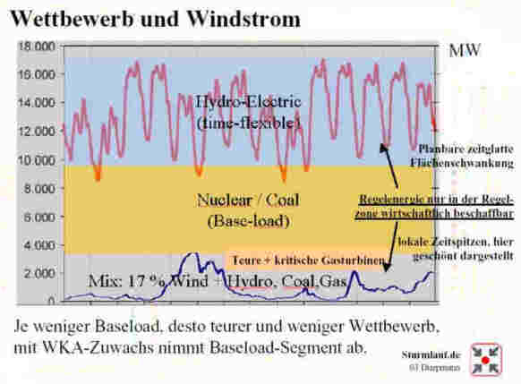
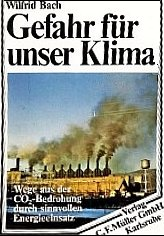
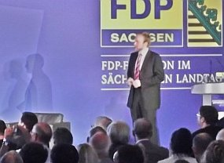

Diese Grafik unter der Berücksichtigung der Energie-Situation bis 2001 von Heinrich Duepmann, www.sturmlauf.de, (jetzt NAEB erläutert, wie die brutale Netzpreistreiberei abgesichert wird:

Nur im Basisstrombereich, der nun durch vermehrte unstetige Ökostromzwangseinspeisung (Wind und Sonne liefern Energie, wie eben der Wind weht weht und die Sonne scheint) im grauen Bereich von unten her immer weiter verkürzt wird, hat der Wettbewerber von außerhalb eine Marktchance. Ökostrom kappt also den Markt für Wettbewerber.
Folge: Die Netzbetreiber aus den Kreisen der Atommafia beherrschen auch künftig unangefochten ihren Markt von der Produktion im eigenen Netzbereich bis zum Endkunden, die Preisgestaltung muß immer weniger Wettbewerb fürchten, den Strompreiserhöhungen und der erpresserischen Energieabzocke wird keine Grenze mehr gesetzt. Stamokap und Ökommunismus pur - prüfen Sie Ihre Stromrechnung! Und zur Tarnung fordert/fördert "man" nun die Grundlastfähigkeit der Ökoenergie: Mehr Biomasseverstromung, Wind- und Solarenergiespeicherung in Druckspeicher (Wasser im Stausee, Druckluft in Salzstockkavernen, Wasserstoffumwandlung, Bla, bla, bla ...). Es gibt inzwischen keine Grenze und keinen Gipfel mehr der subventionierten Unwirtschaftlichkeit - zu gut ist das Ökogeschäft angerollt, zu viele Taschen müssen gestopft werden.
So mißbrauchen die Strommultis - seit gemeinsamer Durchsetzung von EEG/WSVO-EnEV mit Hilfe ihrer klammheimlich eingekauften und mit teuer Geld "ohne Gegenleistung" (Ha, ha!) ausgehaltenen willigen Politschwindler im Verbund mit den Ölprinzen (BP und Shell wollen sich ja übertreffen im Bau riesiger Solarfabriken) - den Öko zur Verteidigung ihrer Marktposition gegen den billigen Wettbewerb (Tschech-, Franzmannstrom). Deswegen bauen und fördern sie Ökoenergieerzeuger und heucheln damit Welterlösung vom Klimagau. Die Stromlinge installieren also den Ökodruck und suchen sich öffentlichkeitswirkame Absahner ins Boot, die das mit verteidigen (Politiker, die nach Mehrheitsmeinung der Bürger mangels Herz sowohl an Käuflichkeit für die schwachsinnigsten Ziele wie auch mangels Bildung an Dummheit und Steuerbarkeit geradezu unübertroffen erscheinen und reiche Öko-Finanzabzocker). Natürlich auf Kosten der Bürger und der Umwelt. Und warum die ganze Wirtschaft da wehrlos mitmacht? Nein, nicht wie Sie denken, weil die von der Ökostromabzocke ausgenommen werden. Sondern weil die Angela denen schon vor zig Jahren in einer Geheimabmachung die volle Kostenneutralität und das ungebremste Ökokassemachen versprochen hat! So fies können die wahren Hintergründe des Ökos sein. Wobei man die Monopolisten fast bedauern sollte ob ihrer so durchsichtig kriminellen und oberdoofen Helfershelfer. Gebrauchtwagen könnte man so wahrlich nicht verkaufen. Um den Gegenwind aus der Bevölkerung zu dämpfen, hat "man" sich nun was ganz Schlaues ausgedacht:
Die Bauernschaft bildet - seit Jahren in hohen Gremien perfekt ausgeheckt - eine zusätzliche Deckung für den Ökobetrug, und alle - da moralisch im Großen und Ganzen inzwischen unter aller Sau - machen mit, gestützt von allen Parteien (CDU/FDP/SPD/GRÜNE/Linke). Sie bauen hektargroße schwermetallhaltige PV-Anlagen, Windspargelfelder, Biomassengas mit zukünftig Zwangseinspeisung ins Gasnetz, Holzhackschnitzel anstelle Schweineschnitzel, Brotgetreide zu Stromgetreide, mag doch die monokulturierte Ökosteppe gänzlich verwüsten und der Rest der Welt weiter verhungern. Raffiniert ausgedacht, amtlich gefördert und organisiert durch unsere ökommunistisch gleichgeschalteten Machthaber - stützt unseren Reichsnährstand und die die Banken, ohne die das Spiel ja nie zum Laufen gehen würde! Die Maulen-und-Klauen(!)seuche der Ökomafia hat ihre Inkubationszeit überwunden, sie bricht nun voll aus. Da war einem selbst BSE, Hühner- und Schweinegrippe noch lieber. Und die schon bisher dick subventionierten Massentierhalter steigen künftig um auf den Energiekunden. Werden wir also zum Mastvieh für Ökozecken? Selbst nutzt man Bauerndiesel im dicken Benz und Landrover, demnächst nur noch Energiefarmer-Kerosin im Privatjet? Wenn nur die Flugzeit wäre, um die anfälligen Ökoenergie-Anlagen mal allein zu lassen. Anders als Schweine brauchen die nämlich Rund-um-die-Uhr-Präsenz von Mo. bis So., so hört man es aus dem Schilfgras flüstern. Wir denken an die verklemmte Schnitzel- und Pellets-Förderschnecke. In der 24-Stunden-Service-Schicht braucht es schon gut ausgebildete Greencardler mindestens aus Indien, mit Anatoli-Ali ist da wenig geholfen.
Der Mißbrauch der Naturliebe durch den Ökoprediger, Solarpropheten und Dr. Franz Alt und die pseudogrüne Ökoapokalyptik anderer Heilsapostel in Politik und durchgeknalltem Journalismus bedienen also einen entarteten Autarkismus, dessen braungrüne Wurzeln im Nazismus auch an seiner primitivgefährlichen Heilsideologie, den Durchhalteparolen und dem Vernichtungswillen gegenüber Andersdenkenden deutlich werden. Wieder mal eine perfide Strategie, die im Grunde nur den Interessen der eigentlichen Profiteure der sogenannten Ökopolitik - recte Ökotyrannei - dient - den Banken und den Energiemonopolisten (das sind die Atomkraftwerkbetreiber, sie dürfen dank ROTGRÜN ihren Strahlemüll nun überall im Lande billigst herumlagern - vgl. obige Lindner Meldungen - anstelle ihn mit der industriell ausgereiften Neutronenbeschuß-Transmutationstechnik auf ungefährliche Kleinstmengen herunterzubeamen - und die Leistung der schrottreifen Atommühlen erweitern, anstelle sie auf modernste und kernschmelzensichere Funktionsweise (HTR, Fusion) umzurüsten, Trittin und seine Truppe sind dafür ihre sichersten Polithelfershelfer) und der Chemie (Nachfolger der in Auschwitz von der jüdischen Arbeitskraft Profit ziehenden IG Farben, nach Bernt Engelmanns Recherchen Förderer der Parteikarrieren so mancher christsozialen und -demokratischen bundesrepublikanischen Chefverkohler im stark kohlehaltigen Dunstkreis von Kohl und Strauß).
Hintergrundinfo:Und die "deutsche" Industrie haben die Ökoideologen auch mit ihrer egoistischen Freßgier hereingelegt und für das wüste CO2-Zertifikatsspiel gewonnen, daß man nun fast ohne Murren über sich hereinbrechen läßt. Man mußte ihnen nur vorschwindeln, wegen getätigter Ökoinvestitionen besonders viel Verkaufszertifikate geschenkt zu bekommen, die sie dann den dummen Ausländern verscherbeln dürften. Das haben die tatsächlich geglaubt! Und halten still bei der Markteinführung aus dem Nichts für ein Lachgas, für das die Bürger dann plötzlich zahlen dürfen. Mächtig gewaltig.
Namentlich bekannt ist übrigens ein atomnaher Physik- und Atom-Professor, der sich im
eingeweihten Kreis noch jetzt damit brüstet, den GRÜNEN das CO2 schon in
den 70ern "ins Hirn geschissen" zu haben. Wieso? Weil wohl nur mit der kohlendioxidinduzierten Klimakatastrophe eine
Klimapanik ausgelöst werden kann, die das tschernobylisierte Volk zurück in den Atomstaat treiben soll, klaro?
Einen hübschen Beleg der atomar fundierten Klimahysterie und des Treibhausschwindel liefert Ulrich Waas, als
Diplomphysiker, dann Dr. rer. nat., ein maßgeblicher Propagandist im atomaren Komplex, u.a. seit 1975 bei der
Kraftwerk Union AG KWU in Erlangen, dann Framatome ANP GmbH und AREVA NP GmbH, in seinem schon 1978 erschienenen und
dann bis in die späten 80er immer wieder neu aufgelegten Pamphlet "Kernenergie - ein Votum für Vernunft".
Klar, wer so titelt, will Vernunftgründe vorgaukeln, wo besser Vorsicht angebracht wäre.
Die rhetorische Technik dafür? Gröbstmögliche Werbelügen wie die angeblich bald ausgehenden Ressourcen und allerlei
sonstigen "Nachteile" der mit der Atomkraft / Kernenergie konkurrierenden Energiequellen und extrem Dubioses aus datenmanipulierend
betrügerischen Simulationsküchen in offenbare Wahrheiten nach dem Motto "die Erde ist keine Scheibe" verpackt, um sie in feiner
Gesellschaft" annehmbarer erscheinen zu lassen. Alles in angeblicher Wissenschaftlichkeit verpackt und mittels titelmächtiger
Gewährsleute aus dem im atomaren Komplex großgewordenen und davon existenziell abhängigen Kreis der meteorolügischen
- heute klimawissenschaftlichen - Doktoren und Professoren (durch die Bank ehrlose und käufliche, da drittmittelabhängige
Brotwissenschaftler nach Schiller!) für das üble Spiel eingesetzt. Mit möglichst internationalem Touch, das erweckt
Ehrfurcht auch vor den käuflichsten Wissenschaftshuren und Klimascharlatanen.
Ich zitiere aus dem Waasschen Propagandaschinken seine Kohlendioxidschmonzette und Treibhaushetze nach der 2. Auflage,
Deutscher Instituts-Verlag, div-Sachbuchreihe ; Bd. 18; 2, Köln 1978 [!!!], S. 79 ff.:
"Ein Problem, das wegen seiner möglichen langfristigen Auswirkungen mehr Forschung als bisher notwendig macht, besteht in der
Abgabe von CO2 [KF: beim Verbrennen fossiler Energieträger]. Nach dem heutigen Stand der Forschung
[KF: 1978!] müssen folgende vier Fragen untersucht werden [KF: gem. Fußnote 44:
"Carbon Dioxid, Climate and Society (PDF-Download)", (Hrsg.) Jill
Williams, IIASA, Laxenburg, Pergamon Press, Oxford 1978; Carbon dioxide, climate and society: proceedings of an IIASA workshop
cosponsored by WMO, UNEP and SCOPE, February 21-24, 1978, editor, Jill Williams, Corp. authors: United Nations Environment Programme
(UNEP); International Institute for Applied Systems Analysis (IIASA); International Council of Scientific Unions (ICSU) - ein
Schlüsseldokument der internationalen Kohlendioxid-Fälschung mit Beiträgen von Häfele, Bolin u.a.]:
- Wieviel CO2 bleibt in der Atmosphäre?
- Um wieviel wird dadurch die Temperatur steigen?
- Welche Klimaverschiebung ergibt sich aus der Temperaturveränderung?
- Welche Auswirkungen auf die Landwirtschaft hat eine Klimaveränderung?
Bisher gibt es Angaben über die mögliche Temperaturerhöhung in etwa 100 Jahren bei Deckung des Hauptenergiebedarfs durch
fossile Brennstoffe, die sich zwischen 3° C und 8° C bewegen. [Fußnote 45: National Academy of Science, Energy and Climate,
Washington D.C, 1977. Hermann Flohn, Stehen wir vor einer Klimakatastrophe?, in: Umschau 77, 1977, Heft 17, Seite 561. Ulrich Hampicke,
Das CO2-Risiko, in: Umschau 77, 1977, Heft 18, Seite 599. Alfred Voss und Friedrich Niehaus, Die
Zukunft des Weltenergiesystems, in: Umschau 77, 1977, Heft 19, Seite 625. Friedrich Niehaus, A non linear eight level tandem model to
calculate the future CO2-C14-burden to the atmosphere, International
Institute for Applied Systems Analysis, Laxenburg, Wien 1976. Wilfried Bach, Das CO2-Problem:
Lösungsmöglichkeiten durch technische Gegensteuerung, in: Umschau 78, 1978, Heft 4, Seite 117.] Dabei können schon
kleinere Temperaturänderungen Auswirkungen auf die Humusbildung und damit auf landwirtschaftliche erträge haben.
[Fußnote 46: Wolfgang Flaig, Boden- und Ernährungskrisen, in: Mitteilungen der TU Braunschweig XII, Heft III/IV 1977.]
Würde die befürchtete Entwicklung durch wissenschaftliche Untersuchungen erhärtet, so wäre sie als gefährlich
anzusehen, weil sie - einmal im Gang - sich noch beschleunigen kann, das Klima "kippt um", und ist nur langfristig umkehrbar.
[Fußnote 47: National Academy of Science und Hermann Flohn wie vor.]
Eine Bindung des CO2 etwa durch Pflanzen hat nur einen Effekt, wenn das Verrotten später ohne
Sauerstoffzufuhr erfolgt. Wie die Erdgeschichte zeigt, war dies bei Bildung von Kohle und Öl ein Prozeß, der mehrere hundert
Millionen Jahre gedauert hat. Carl Friedrich von Weizsäcker sieht hier kaum Zweifel, "daß auch nach heutigen Vorschriften die
Abgase fossiler Verbrennung schädlicher sind als Reaktorabgase. Insbesondere schwebt über uns das Damoklesschwert der
langfristigen Klimaänderung durch das bei der Verbrennung entstehende Kohlendioxid. Wir betreiben heute im fossilen Bereich eben die
Vogel-Strauß-Politik, die man vielfach den Vertretern der Kernenergie nachsagt: wir erzeugen eine nicht wiedergutzumachende
langsame ökologische Veränderung, deren Folgen unsere Urenkel zu tragen haben werden." [Fußnote 48: Carl Friedrich von
Weizsäcker, Friedliche Nutzung der Kernenergie - Chancen und Risiken, Vortrag im Wissenschaftszentrum Bonn am 9. März 1978;
veröffentlicht in DIE ZEIT vom 24.3.1978.]
Vorläufig erscheint noch eine vorsichtig abwartende Haltung gerechtfertigt: "Wir glauben, daß die gegenwärtigen
Kenntnisse ausreichen, um eingehende Untersuchungen vieler alternativer Energieversorgungssysteme zu fordern,aber noch nicht eine
Entscheidung nötig machen, die Nutzung fossiler Energieträger einzuschränken. Genauso unberechtigt sind Konzepte, die den
Einsatz von Kohle wegen ihrer reichen Vorkommen gegenüber nicht-fossilen, nicht CO2 produzierenden
Energieversorgungssysteme stärker betonen." [Fußnote 49:
Carbon Dioxid Climate and Society, Seite 316]"
Aha, da ist es also, das CO2-Monster in seiner ganzen Ausprägung. Getürkte und
gefälschte Wissenschaftsergebnisse, furchterregende Schreckens- und Katastrophenszenarien rund um die angebliche Klimakatstrophe -
und warum das alles in dieser reichlich verquasten, ach so seriösen und dem allgemeinen und internationalen Volkswohl ach so
zugeneigten Faschismus-Schreibe? Um die Entwicklung der Scheiß Kernkraft - so die Meinung der spätestens seit der
Tschernobyl-Panik 1986 traumatisierten Bürger - wieder auf den rechten Pfad der Atommafia zu zwingen.
Schon lange vorher ebnete das Projekt "Energiesysteme" des Internationalen Instituts für Angewandte Systemanalyse (IIASA),
vom o.g. Wolf Häfele, sog. "Vater des deutschen Schnellen Brüters" (Kalkar), 1973–1980 geleitet, (von 1974–1980 stellv.
Direktor von IIASA) dem CO2-Wahn den Weg. Hexenmeister Haefele ging es immer nur darum, moeglichst viele "fossile" Kraftwerke durch
Atomkraftwerke/Kernkraftwerke zu ersetzen, er soll sich angeblich vor Zeugen damit gebrüstet haben, derjenige gewesen zu sein, der
den GRÜNEN das CO2-Thema "ins Hirn geschissen" habe. Eine reife Meisterleistung, wenn man bedenkt, daß die GRÜNEN
ausgerechnet von den ostverküsteten Erdölbillionären
erfunden wurden und gesteuert
sind. Wolf Häfele und Alan S. Manne (1975, Energy Policy, 3, 3-23) resumieren ihren aus öffentlichen Geldern finanzierten
Forschungsscheiß (da befinden sich Rahmstorf, Edenhofer, Seiler, Graßl, Schellenhuber und so viele andere
Klimaschutzpropheten freilich in bester Gesellschaft) in
"Strategies for a transition from fossil to nuclear fuels"
und darin heisst es dazu recht aufschlußreich:
"Most countries now wish to reduce their dependence on fossil fuels. In this paper, Professors Häfele and Manne discuss
transition away from the current situation where virtually all demands for primary energy are met by fossil fuels. Assuming that this
transition is to be based upon nuclear fission, they examine the interplay between natural resource scarcities, economics costs and the
assessment of alternative technologies for the production of synthetic fuels.".
Die ganze menschengemachte CO2-Erwärmerei also nur abgefurztestes Marketinggesumse stinkendster Machart, seit den Anfängen der
50er Jahre bis ins Unendliche und Widerwärtigste - da Raffinierteste gesteigert! Wer weiß es denn unter all den
Klimaschutzdummschwätzern hierzulande, daß das ganze Treibhaus-Lügengebäude aus der Werbeabteilung der Atommafia und
ihrer korrupten Professoren und für die Atomschwindler zuständigen Umweltministerien (Diplomphysikerin Angela Merkel startete
ihre Westkarriere ja zielsicher ebenfalls in der Verkohlungsregierung als Umweltministerin!) kommt? Hätten Sie's gewußt?
Schrecklich die gewissenlose Mitwirkung der Pseudowissenschaftler rund um einen Weizsäcker und Waas und die
inzwischen bis zum Erbrechen aufgeblähte "Klimawissenschaft", die den religionsersetzenden/religionszersetzenden
Charakter der modernen Wissenschaft in Angesicht der leichtgläubigen und käuflichen Politik weidlich zu
mißbrauchen verstehen und im Dienst ihrer Auftraggeber wohl vor keiner wissenschaftlichen Fälschung
zurückschrecken - seit jeher prächtigst unterstützt vom widerlichsten Gossenjournalismus der
einschlägigen Hetzblätter und Funkanstalten namens "etablierte seriöse Medien":
Als ob Erdöl und Erdgas und Kohle tatsächlich fossilen Ursprungs seien, als ob sie bald zu Ende wären,
als ob das Kohlendioxid schädlich und klimaverändernd sei. Eine absichtliche Lüge aus den Kreisen der
Atomphysiker seit
Edward Teller,
Andrei Dmitrijewitsch Sacharow
mit seiner ekelerregenden und heute als ges. gesch. Ökologismus nahezu umgesetzten "Geohygiene" (beschrieben in
seinem 1968 erschienen Werk "Wie ich mir die Zukunft vorstelle") und anderen dergleichen. Pfui! Zur Lüge der versiegenden
Energien aus Erdöl, Gas, Kohle - Lies nach bei
Thomas Gold (sowie weiteren Quellen auf diesem Link)! Und daß der hochrangige
Atompropagandist und spin doctor Waas dann noch als "Fachautor" für "Alternativen" hervorgetreten ist -
"Alternativ-Technologien. Forderungen und Antworten" und sein Propaganda-Gesumse auch für die unnötigsten
Alternativblödheiten losläßt, darf man sich da noch wundern?
Eine hochinteressante Online-Zusammenschau der geschichtlichen Hintergründe des CO2- und Klimaschwindels als stark
erweiterte und aktualisierte Version seines aufschlußreichen Buches liefert der
Pro-Global-Warmist Spencer R. Weart,
hier der unheilvolle Einfluß der US-Regierung,
hier die Einstiegsseite: The Discovery of Global Warming.
A hypertext history of how scientists came to (partly) understand what people are doing to cause climate change..
Klar, daß es auch in unserem US-Vasallenstaat unendlich viele käufliche und unredliche Meteorologen und Klimaschutzexperten in
staatlichen Diensten gab und gibt, die der Atommafia zuliebe die Erwärmungs-Treibhaus-CO2-AGW-Lüge immer weiter ausbauen, mit
Tabellen, Simulationen, Datenfälschungen und Extremgrafiken zu den leider nicht mal wohlfeil herbeierfundenen Hetzszenarien
garnierten. Sind sie doch selbst Kinder des Atomstaates und früher nur durch die Fallout-Forschung zu Masse, Macht und Ansehen
gekommen. Von ihnen hing es ja ab, daß bei einem im kalten Krieg ja nicht ganz unwahrscheinlichen Atombombenabwurf die sachgerechte
Beurteilung und Weitermeldung der maßgeblichen Windrichtung zum schnellstmöglichen Schutz der Politiker führte.
Auch der münsteraner Klimatologe und CO2-Bedrohungs-Weltuntergangsszenarienschmied Prof. Dr. Wilfrid Bach, im perfiden Albion
(Sheffield) doktoriert und u.a. NATO-Berater, gefiel sich mit seinen hochmögenden Freunden der Atomlobby darin, auf jede nur
vorstellbare Art und Weise für den CO2-Popanz und den verlogenen Atomstaat die Trommel zu rühren. Hier ein Blick in sein
Hauptmachwerk:
"Gefahr für unser Klima. Wege aus der CO2-Bedrohung
durch sinnvollen Energieeinsatz", C.F. Müller, Karlsruhe 1982.


So ist es nur logisch, daß ein gewisser Doktor Bodo Sturm (siehe Bild, wer sind wohl seine Drittmittelschatten?), seines Zeichens Professor für Volkswirtschaftslehre und Quantitative Methoden an der HTWK Leipzig, ironischerweise und ausgerechnet auf dem Kongreß "Sind wir noch zu retten? Zwischen Klimakatastrophe und Ökohysterie, Alternative Klimakonferenz der FdP-Fraktion im Sächsischen Landtag, 30. Juni 2012, Internationales Congress Center Dresden" in seinem Referat mit dem Titel "Rationale Klimapolitik – eine ökonomische Betrachtung" geradezu Ungeheuerliches zum Besten gab. Unter der zugestandenen und eisern durchgehaltenen Fiktion, daß die professoralen Klimalügen rund um angeblich CO2-induzierte Schäden wie globale Erwärmung und Meeresspiegelanstieg usw. - die die anderen Referenten (darunter die Berühmtheiten Benny Peiser und Michael Miersch) und Diskussionsredner wenn nicht total entlarvten, so doch grundsätzlich in Frage stellten, stimmten, und der Antwort "JA!" auf die Nachfrage, ob CO2 tatsächlich- wie von ihm behauptet - "Schmutz" sei, empfahl er kaltschnäuzig eine ökonomisch optimierte Strategie der CO2-Vermeidung. Wie? Na klar, durch Emissionshandel. Nur der - als einziges Element einer modernen Klimaschutzpolitik - sei schließlich in der Lage, allen (mit der Atomkraft konkurrierenden?) CO2-minimierten "Ökoenergien" ruckizucki den Saft abzudrehen.Dr. Helmut Böttiger, ein wohlinformierter Insider (und Autor der berühmten "Spatzseite"), schreibt mir zu weiteren - seltsam verrenkten - Ökoergüssen der "liberalen" Klimaschutzapostel in der FDP - offenbar willfährige Marionetten der industriellen Ökoabzocker des atomaren Komplexes, von denen sich z.B. nicht nur der Atommulti RWE wie selbstverständlich einen "GRÜNEN" Joschka Fischer als "Feigenblatt", Türöffner, Geschäftemacher, Aufreißer, Schutzmann bzw. "Berater" leistet:
"Hier wird liberales Süßholz geraspelt, so wie bei anderen soziales oder konservatives oder grünes - ohne irgend einen Gedanken an deren Umsetzung. Da sie die Politik sowie per e-mail oder Fax von einem "Großen Bruder", der für sie denkt, zugeschickt bekommen. Warum ist die grüne, rote, schwarze, grüne Logik so schwer zu verstehen, obwohl sie so simpel ist? Es ist Bankenpolitik, Verknappung des Güterangebots zur marktwirtschaftlichen Preis"stabilisierung", Umlenken der noch vorhandenen Kaufkraft auf den Ankauf von Wertpapieren (die ohne das nichts wert wären). Jetzt kommen als deren neueste Kreation noch CO2-Zertifikate auf den Markt. Das alles zur Schein-Stabilisierung eines längst bankrotten Finanzsystems (8,7 Trillionen Jahresumsatz an Finanzderivaten bei nur 41 Billionen WeltBrutto-Inlandprodukt!). Wenn man das aufrecht erhalten will, geht das letztendlich nur durch Liquidierung der "Überschussbevölkerung" mittels Hunger, Krieg gegen Terrorismus und andere Maßnahmen. Wer wollte das den Betroffenen aber mitteilen - kein Liberaler! Wer hierbei noch auf "anerkannte" Politiker und deren Wahlvereine hofft, hat nicht mehr alle Tassen im Schrank."
Soll man das für bare Münze nehmen? Wenn ja, wäre es kein Wunder, daß ausgerechnet unsere "Liberalkonservative
Mitte" als willfährige Handlanger der Bank- und damit verbunden Industrie-Monopole die Ökoabzocke eingefädelt hat, wie es
eingeweihte Kreise um
Hans-Dietrich Genscher
und dessen willige Helfershelfer Hartkopf, Menke-Glückert, Verheugen, Hirche usw. seit Jahren raunen. Und ebenso logisch, daß
die allgegenwärtigen Gesinnungslumpen (wer hat uns verraten?) bei Rotgrün diese aus unserem mageren Rippenfleisch gespeisten
Fleischtöpfe bis zum Bürger- und Staatsbankrott weiter ausweiden. Nur noch von den ALt-FDJlerInnenn und deren Speichellecker bei
Schwarzgelb zu übertreffen, wa? Wobei die Heuchelei, dieses gesetzlich sanktionierte und ständig raffiniert verschärfte
terroristische Raubsystem diene der CO2-Vermeidung und nehme Einfluß auf den künftigen Wetterverlauf und damit unser aller
Wohl nur noch von den Allerdümmsten (davon gibt es allerdings so einige) geglaubt und von den Allermeisten aus Angst und Schiß
und feiger Anpasserei oder erbärmlichem Ökoeigennutz als PV-Verseucher und Photovoltaik-Parasit geheuchelt wird.
Daß ausgerechnet die großen Kirchen in einer fürchterlichen Einheit von Ökothron- und altar da mitmachen,
läßt für deren Zukunft als einst christliche Institution (?) nichts wirklich Gutes hoffen und ist Ergebnis - neben
Zeitgeisterei dümmlichster Art - eben auch deren perfider Käuflichkeit durch allerlei geldwerte Vorteile seitens der
Ökoprofiteure und letzterer vielfältigen Finanzinstrumente, wie es James Wanliss in
The Green Dragon in kräftigen Worten beschreibt. Hat
man sich denn nicht schon zur Nazizeit genug blamiert?
Muß nun ausgerechnet widerlichste Wind- und Sonnenanbetung die
annodunnemalsige Führervergötzung übertreffen? Armes Deutschland! möchte man seufzen und sich mit dem alten Spötter Heinrich Heine die Nächte um die
Ohren grämen. Nützt bloß wieder mal nix. Und da man eine Religion erfahrungsgemäß nur mit
einer anderen Religion bekämpfen kann, hat man nun die Maske fallen lassen, appelliert unter Zuhilfename allerlei
wortgewandter Zionisten an die dumpfbackigsten "Gefühle" sprich Ängste des deutschen Untermenschen und
verhetzt die hier einzig sichtbare Alternative: Den Islam. Allah ist groß und Mohammed sein Prophet. Doch nicht
stark genug gegen die westlichen Lüste des Kapitalismus. Denn gucken wir auch hier genauer, hängen die
arriviert-integriert-vergartenzwergten Mohammedaner bestimmt ebenso ihren schwachen Glauben an die
Photovoltaik-auf-dem-Eigenheimdach-Religion und kannibalisieren unser Vaterland ebenso wie die
entchristlichten zipfelbemützt-urdeutschen Schlaumeier mit ihren geifernden Gierschlünden vom Hartzvierler
bis zum Banker und Manager, die dann die ausbleibenden Solarerträge vom EFH-Dach einsamst im Kellerloch ausheulen.
Denkt mal nach darüber. Für all die künftigen Rentenschmarotzer, die selber keine Kinder haben, mag es ja egal sein. Wer wird ihnen jedoch dermaleinst die verrenteten Ärsche abputzen, wenn nicht nur unserer Gesellschaft, sondern auch unserem Sozialsystem die Luft ausgegangen ist? Ob dann die zur Seite gebrachten TEuros wirklich noch helfen? Und meine verehrten Liebesknabenkäufer paßt auf - schon und nicht nur bei den Sedlmayer und Moshammer ging auch dieser scheinbare Ausweg aus der Greisenvereinsamung schief!
Und so sieht es wirklich aus mit den Ökologen - eine hochbrisante politikgeschichtliche Analyse des Ökoterrors: